1. Factor Analysis on Simulated Image#
This example simulates a full 3-D fluorescence lifetime image dataset by combining a binary intensity mask (for a specific image structure) with a multi-region (“multi-ROI”) label mask, so different regions of the image can be assigned independent simulator configurations for region-specific lifetime variation.
This example walks through:
factor analysis
Author - Vikas
## importing the modules required for this work
import sys
sys.path.insert(0, "ex_helper")
from sim_general_image import LettersShape, ROIMaskGenerator
from pyfli.analysis.utils import random_true_pixel
from pyfli.analyticalWorkflow import AnalyticalHelpers
from pyfli.data_cc import Normalization
from pyfli.data_text import MessageDisplay
from pyfli.data_vnp import ColorProcessor, CVPlot, DataViewer
from pyfli.io import DataOperations
from pyfli.simulator import FLIModelImageGenerator
1.1. Generating an image with a custom shape function#
In this example, a 128 x 512 image is generated with the letters “F”, “L”, “I”, “M”. Each letter is assigned a different intensity value (grayscale bit size) and a different lifetime: 0.7 ± 0.05 ns, 0.8 ± 0.05 ns, 0.9 ± 0.05 ns, and 1.0 ± 0.05 ns, respectively.
h, w = 128, 512
generator = ROIMaskGenerator((h, w), top=10, bottom=10, left=10, right=10)
FLIM_letters = LettersShape(
letters=("F", "L", "I", "M"),
gap=0.15,
)
custom_intensities = [0.7, 0.8, 0.9, 1.0]
# This generates the preview of the generated images
generator.plot_preview(
FLIM_letters,
bit_depth=10,
intensities=custom_intensities,
show=True,
)
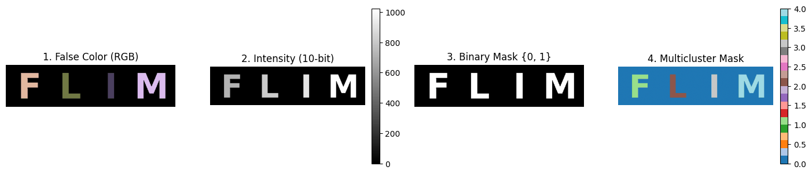
(<Figure size 1400x350 with 6 Axes>,
array([<Axes: title={'center': '1. False Color (RGB)'}>,
<Axes: title={'center': '2. Intensity (10-bit)'}>,
<Axes: title={'center': '3. Binary Mask {0, 1}'}>,
<Axes: title={'center': '4. Multicluster Mask'}>], dtype=object))
# Path to the local IRF file (e.g. an SPCImage-exported .txt calibration file)
IRF_PATH = "<select file/folder path>"
loader = DataOperations(irf_path=IRF_PATH)
irf_data = loader.load_irf()
gate_delay = 12.5 / irf_data.shape[2]
num_gates = irf_data.shape[2]
freq = AnalyticalHelpers(
laser_period=12.5, gate_delay=gate_delay, num_gate=num_gates
).freq_computation()
INFO:pyfli:Initiating IRF load from: <select file/folder path>
# select the type of decay model to simulate
MODEL_TYPE = "mono-exponential"
if MODEL_TYPE == "bi-exponential":
mono_fraction = 0.0
elif MODEL_TYPE == "mono-exponential":
mono_fraction = 1.0
else:
mono_fraction = 0.4 # fraction of mono-exponential model in sampled data
# Your constant, default configuration
BASE_CONFIG = {
# Modular Noise
"jitter": False, # offset artifact (due to jitter)
"dcr_on": True, # Dark Count Rate (thermal background)
"poisson": False, # Shot noise — Large detector only
"qe_on": True, # Quantum efficiency scaling
"read_noise_on": False, # Gaussian read noise — Large detector only
# Sensor
"sensor_type": "discrete", # "continuous" | "discrete"
"bit": 12,
"dcr": 0.08, # Mean dark counts per bin
"laser_feq": freq[1], # Laser repetition rate (MHz) → period = 12.5 ns
"round_on": True, # Round photon counts to integers — Macro_sim only
"clip_on": True, # Clip at bit-depth ceiling — Macro_sim: max_adc_val; TCSPC: max_bin_count
# Fluorescence Physics (FLI / FRET)
"tau2": (1, 1), # τ₂ ~ TruncNormal(mu=1 ns, sigma=0.5 ns)
"tau2_dist": "beta", # if dist "beta" or "normal" (default)
"efficiency": (1, 1), # FRET efficiency E ~ Beta(2, 5) → [0.1, 1.0]
"A1_fraction": (1, 1), # Amplitude fraction A₁ ~ Beta(2, 5) → [0.05, 0.95]
"photo_count": (2, 5), # Peak intensity ~ Beta(2, 5) × max_adc - large detectors
"mono_fraction": mono_fraction, # Fraction of pixels forced mono-exponential (0.0 = all bi-exp)
"n_cycles": (1_500_000, 2_000_000), # Accumulation cycles — for photon counter
}
Different ROIs (letter areas, in this case) are assigned different lifetimes.
def get_config(**kwargs):
"""Create a config by overriding defaults with specific test parameters."""
config = BASE_CONFIG.copy()
config.update(kwargs)
return config
ROI0 = {}
ROI1 = get_config(
tau2_beta_range=(0.05, 0.5),
)
ROI2 = get_config(
tau2_beta_range=(0.05, 0.7),
)
ROI3 = get_config(
tau2_beta_range=(0.05, 0.9),
)
ROI4 = get_config(
tau2_beta_range=(0.05, 1.1),
)
img_color = generator.generate_color_image(FLIM_letters)
img_intensity = generator.generate_intensity_image(
FLIM_letters, intensities=custom_intensities
)
img_cluster = generator.generate_cluster_mask(FLIM_letters)
b_bool_mask = generator.generate_binary_mask(FLIM_letters)
simulated_img = FLIModelImageGenerator(
irf_data=irf_data[120, 40, :],
intensity_image=img_intensity,
roi_mask=img_cluster,
roi_params=[ROI0, ROI1, ROI2, ROI3, ROI4],
method="PHOTON_COUNTER",
verbose=True,
bool_mask=b_bool_mask,
)
gt_data = simulated_img.generate_image()
INFO:pyfli:Generating PHOTON_COUNTER FLI Image [128x512x256]...
res = gt_data["results"]["maps"]
if MODEL_TYPE == "bi-exponential":
data_list = [
res["tau1_map"],
res["tau2_map"],
res["alpha1_map"],
res["A1_map"],
res["A2_map"],
res["fret_efficiency_map"],
res["tau_mean_map"],
res["photon_count_map"],
]
data_names = [
"tau1_map",
"tau2_map",
"alpha1_map",
"A1_map",
"A2_map",
"fret_efficiency_map",
"tau_mean_map",
"photon_count_map",
]
rows = 2
fig_size = (16, 7)
else:
data_list = [res["tau_map"], res["photon_count_map"]]
data_names = ["tau_map", "photon_count_map"]
rows = 1
fig_size = (12, 3)
jet_m = ColorProcessor().lowest_zero("jet")
cmaps = [jet_m] * len(data_list)
v_ranges = None
px = None
if px is None:
cols = int(len(data_list) / rows)
else:
cols = int(len(data_list) / rows) + 1
_ = DataViewer().display_data(
data_list,
structure=(rows, cols),
coord=px,
data_names=data_names,
cmaps=cmaps,
v_ranges=v_ranges,
figsize=fig_size,
normalize=False,
yscale="linear",
)
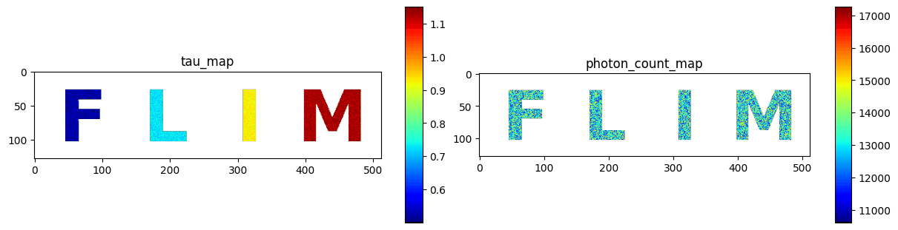
sim_decay = gt_data["raw_data"]["decay"]
sim_irf = gt_data["raw_data"]["irf"]
x, y = random_true_pixel(b_bool_mask)
TRs = gt_data["results"]["TR_maps"]
maps = gt_data["results"]["maps"]
print(f"the non-zero pixel selected for probing is ({x}, {y})")
irf_norm = Normalization(sim_irf).norm_scale(sim_decay)
DataViewer().plot_fli_px(
data_list=[sim_decay, irf_norm, TRs["fit_map"], TRs["residual_map"]],
pixel=(x, y),
mode=[0, 1, 2],
mode2=[1],
names=["decay", "irf", "fit"],
cmap=jet_m,
)
_ = MessageDisplay().get_pixel_summary(data_maps=maps, px=(x, y))
the non-zero pixel selected for probing is (62, 78)
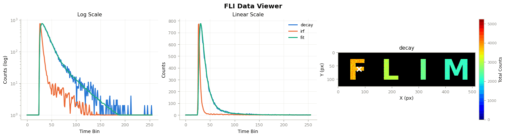
INFO:pyfli:
Pixel (62, 78)
─────────────────────
A 15104.5098
α —
τ₁ 0.5141
τ₂ —
R² —
Red.χ² —
Raw.χ² —
v-shift 0.0000
h-shift —
─────────────────────
1.1.1. Factor Analysis#
from pyfli.analysis import FactorAnalysis
fa = FactorAnalysis(
decay=sim_decay,
irf=sim_irf,
mask=b_bool_mask,
all_datasets=[maps],
all_fitset=[TRs],
method_names=["ground_truth"],
cluster_mask=img_cluster,
cluster_names={1: "F", 2: "L", 3: "I", 4: "M"},
)
Per-pixel photon count (total_photons) vs. estimated lifetime, unbinned.
df, edges, fig, axes = fa.analyze_and_plot(
factor_key="total_photons",
target_keys=["tau_map", "photon_count_map"],
kind="scatter",
)
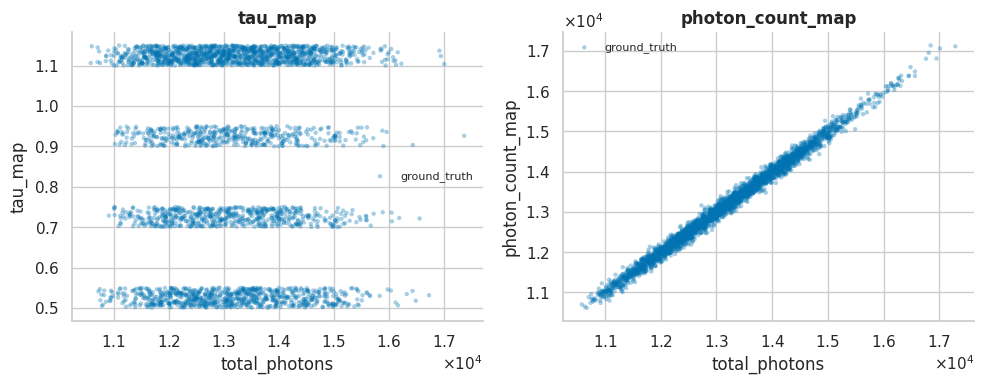
Same pixels grouped into 100 equal-frequency photon-count bins – mean per bin, with SEM error bands.
df_binned, edges_binned, fig, axes = fa.analyze_and_plot(
factor_key="total_photons",
target_keys=["tau_map", "photon_count_map"],
n_bins=100,
bin_mode="quantile",
kind="line",
stat="mean",
error="sem",
)
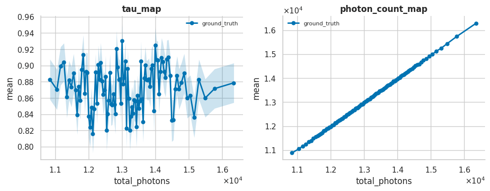
Coefficient of variation of tau, $\sigma_\tau/\tau$ (per-bin std divided by per-bin mean) – a scale-free measure of lifetime-estimate precision vs. photon count. Same bins as the plot above.
df_cv, edges_cv, fig, axes = fa.analyze_and_plot(
factor_key="total_photons",
target_keys=["tau_map"],
n_bins=100,
bin_mode="quantile",
kind="line",
stat="cv",
error=None,
)
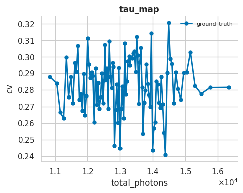
Full per-bin distribution (not just the mean) of tau_map, using fewer bins for readability.
fig, ax, raw_df = fa.plot_bin_distribution(
"total_photons", "tau_map", n_bins=10
)
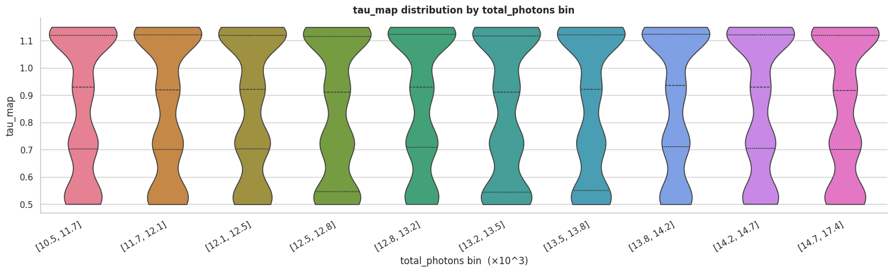
Per-pixel peak (max) decay count vs. estimated lifetime.
df_peak, edges_peak, fig, axes = fa.analyze_and_plot(
factor_key="peak_counts",
target_keys=["tau_map"],
kind="scatter",
)
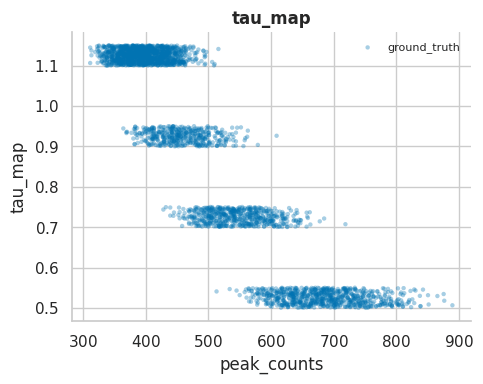
1.1.2. Cluster-specific analysis#
img_cluster labels each letter’s pixels with a distinct region id (0 = background, 1-4 = F/L/I/M). Passing it as cluster_mask lets FactorAnalysis bin/aggregate separately per region, instead of pooling all pixels together – useful here since each letter was simulated with its own lifetime range.
fa.list_clusters(), fa.cluster_names
([1, 2, 3, 4], {1: 'F', 2: 'L', 3: 'I', 4: 'M'})
df_cluster, edges_cluster = fa.analyze_by_cluster(
factor_key="total_photons",
target_keys=["tau_map"],
n_bins=20,
)
fig, axes = fa.plot_by_cluster(df_cluster)
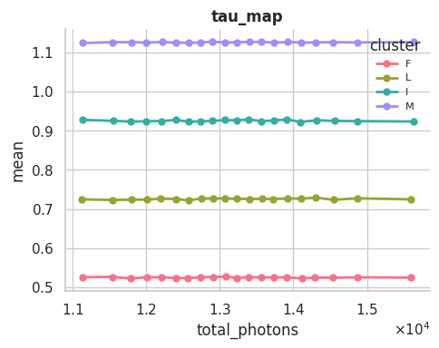
Cluster-specific coefficient of variation: $\sigma_\tau/\tau$ per letter (F/L/I/M), reusing df_cluster computed above.
fig, axes = fa.plot_by_cluster(df_cluster, stat="cv", error=None)
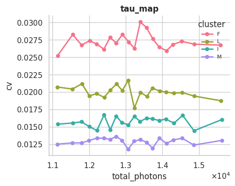
1.2. Standalone CVPlot#
The coefficient-of-variation plots above are all computed through FactorAnalysis, which needs the full multi-method comparison setup (decay, irf, all_datasets, all_fitset, …). pyfli.data_vnp.CVPlot is a lighter, standalone version of the same cv = std/mean binning-by-photon-count logic that works directly on any PyFLI fitter’s output – results["results"]["maps"] from FLICPUProcessor (NLSF or MLE-backed), FLIGPUProcessor, or, as here, the simulator’s ground-truth maps – since they all share the same map-key convention. No FactorAnalysis instance required.
1.2.1. Binary mask (mono FLIM case, pooled)#
Reuses the mono FLIM case’s maps/sim_decay/b_bool_mask from the very first example. photon_map=sim_decay.sum(axis=-1) bins by the true detected photon count rather than the fitted photon_count_map amplitude. The dotted line is the theoretical shot-noise 1/sqrt(N) trend and the dashed line is a fitted a*N**b power law – see below for why tau_map (ground truth) doesn’t actually follow either.
cv_plot = CVPlot()
df_cvplot, fig, axes = cv_plot.compute_and_plot(
maps,
tau_keys=["tau_map"],
photon_map=sim_decay.sum(axis=-1),
mask=b_bool_mask,
n_bins=100,
show_ideal_trend=True,
show_powerlaw_fit=True,
)
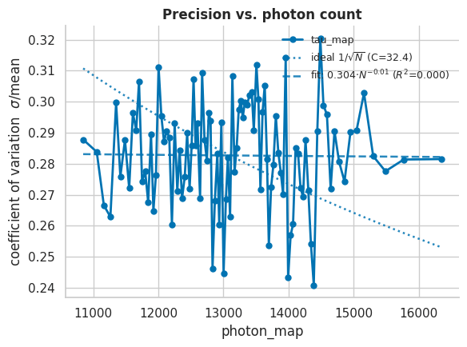
1.2.2. Multi-cluster mask (mono FLIM case, per letter)#
Same maps/sim_decay as the binary-mask example above, but now with img_cluster (F/L/I/M) as cluster_mask – a single subplot (only one parameter, tau), one line per letter, again with the ideal and fitted reference curves overlaid.
df_cvplot_mono_cluster, fig, axes = cv_plot.compute_and_plot(
maps,
tau_keys=["tau_map"],
photon_map=sim_decay.sum(axis=-1),
mask=b_bool_mask,
cluster_mask=img_cluster,
cluster_names={1: "F", 2: "L", 3: "I", 4: "M"},
n_bins=20,
show_ideal_trend=True,
show_powerlaw_fit=True,
)
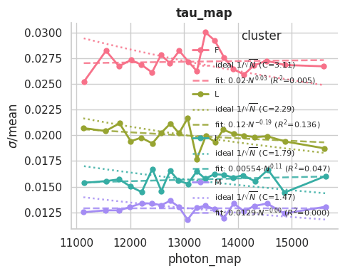
1.2.3. Fitted tau_map (mono FLIM case): ground truth vs. NLSF fit#
The tau_map used above is the simulator’s exact ground-truth generating parameter – written straight from the parameter sampler before any decay simulation, noise, or fitting happens. Its per-bin std therefore reflects only the deliberately-injected per-letter tau2_beta_range heterogeneity (a small, photon-count-independent spread), not shot noise – which is exactly why the CV curves above are flat and the power-law fits land near a slope of 0 with a poor R^2: there’s no 1/sqrt(N) relationship in ground truth to find.
Fitting the noisy sim_decay with an actual NLSF solver (FLICPUProcessor + BaseFLIFitter) instead recovers each pixel’s real measurement uncertainty, which should follow the shot-noise-limited 1/sqrt(N) law. Compare the two side by side below.
from pyfli.solver.base_fitter import BaseFLIFitter
from pyfli.solver.cpu_processor import FLICPUProcessor
proc_mono_fit = FLICPUProcessor(freq, BaseFLIFitter)
fit_result_mono = proc_mono_fit.process_image(
sim_decay,
sim_irf,
mask=b_bool_mask,
model_type="mono-exponential",
)
maps_mono_fitted = fit_result_mono["results"]["maps"]
Fitting Pixels (least_squares): 100%|██████████| 10241/10241 [00:17<00:00, 601.32px/s]
Binary mask, fitted tau_map – compare this against the “Binary mask (mono FLIM case, pooled)” ground-truth plot above.
df_cvplot_fitted, fig, axes = cv_plot.compute_and_plot(
maps_mono_fitted,
tau_keys=["tau_map"],
photon_map=sim_decay.sum(axis=-1),
mask=b_bool_mask,
n_bins=100,
show_ideal_trend=True,
show_powerlaw_fit=True,
)
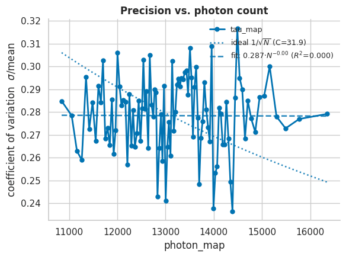
Multi-cluster mask, fitted tau_map – compare this against the “Multi-cluster mask (mono FLIM case, per letter)” ground-truth plot above (the one that originally prompted this comparison).
df_cvplot_fitted_cluster, fig, axes = cv_plot.compute_and_plot(
maps_mono_fitted,
tau_keys=["tau_map"],
photon_map=sim_decay.sum(axis=-1),
mask=b_bool_mask,
cluster_mask=img_cluster,
cluster_names={1: "F", 2: "L", 3: "I", 4: "M"},
n_bins=20,
show_ideal_trend=True,
show_powerlaw_fit=True,
)
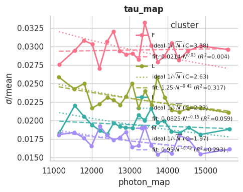
1.3. Bi-exponential FRET Example#
Same simulation setup as above, but with the letters “F”, “R”, “E”, “T” and MODEL_TYPE = "bi-exponential". Everything else (canvas size, IRF, intensities, ROI lifetime ranges) is unchanged.
FRET_letters = LettersShape(
letters=("F", "R", "E", "T"),
gap=0.15,
)
generator.plot_preview(
FRET_letters,
bit_depth=10,
intensities=custom_intensities,
show=True,
)
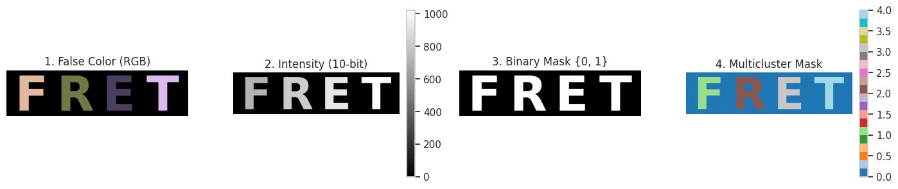
(<Figure size 1400x350 with 6 Axes>,
array([<Axes: title={'center': '1. False Color (RGB)'}>,
<Axes: title={'center': '2. Intensity (10-bit)'}>,
<Axes: title={'center': '3. Binary Mask {0, 1}'}>,
<Axes: title={'center': '4. Multicluster Mask'}>], dtype=object))
Different ROIs (letter areas, in this case) are assigned different lifetimes.
MODEL_TYPE_fret = "bi-exponential"
mono_fraction_fret = 0.0
BASE_CONFIG_fret = {
# Modular Noise
"jitter": False,
"dcr_on": True,
"poisson": False,
"qe_on": True,
"read_noise_on": False,
# Sensor
"sensor_type": "discrete",
"bit": 12,
"dcr": 0.08,
"laser_feq": freq[1],
"round_on": True,
"clip_on": True,
# Fluorescence Physics (FLI / FRET)
"tau2": (1, 1),
"tau2_dist": "beta",
"efficiency": (1, 1),
"A1_fraction": (1, 1),
"photo_count": (2, 5),
"mono_fraction": mono_fraction_fret,
"n_cycles": (1_500_000, 2_000_000),
}
def get_config_fret(**kwargs):
"""Create a config by overriding defaults with specific test parameters."""
config = BASE_CONFIG_fret.copy()
config.update(kwargs)
return config
ROI0_fret = {}
ROI1_fret = get_config_fret(
tau2_beta_range=(0.05, 0.5),
)
ROI2_fret = get_config_fret(
tau2_beta_range=(0.05, 0.7),
)
ROI3_fret = get_config_fret(
tau2_beta_range=(0.05, 0.9),
)
ROI4_fret = get_config_fret(
tau2_beta_range=(0.05, 1.1),
)
img_intensity_fret = generator.generate_intensity_image(
FRET_letters, intensities=custom_intensities
)
img_cluster_fret = generator.generate_cluster_mask(FRET_letters)
b_bool_mask_fret = generator.generate_binary_mask(FRET_letters)
simulated_img_fret = FLIModelImageGenerator(
irf_data=irf_data[120, 40, :],
intensity_image=img_intensity_fret,
roi_mask=img_cluster_fret,
roi_params=[ROI0_fret, ROI1_fret, ROI2_fret, ROI3_fret, ROI4_fret],
method="PHOTON_COUNTER",
verbose=True,
bool_mask=b_bool_mask_fret,
)
gt_data_fret = simulated_img_fret.generate_image()
INFO:pyfli:Generating PHOTON_COUNTER FLI Image [128x512x256]...
res_fret = gt_data_fret["results"]["maps"]
data_list_fret = [
res_fret["tau1_map"],
res_fret["tau2_map"],
res_fret["alpha1_map"],
res_fret["A1_map"],
res_fret["A2_map"],
res_fret["fret_efficiency_map"],
res_fret["tau_mean_map"],
res_fret["photon_count_map"],
]
data_names_fret = [
"tau1_map",
"tau2_map",
"alpha1_map",
"A1_map",
"A2_map",
"fret_efficiency_map",
"tau_mean_map",
"photon_count_map",
]
jet_m_fret = ColorProcessor().lowest_zero("jet")
cmaps_fret = [jet_m_fret] * len(data_list_fret)
_ = DataViewer().display_data(
data_list_fret,
structure=(2, 4),
coord=None,
data_names=data_names_fret,
cmaps=cmaps_fret,
v_ranges=None,
figsize=(16, 7),
normalize=False,
yscale="linear",
)
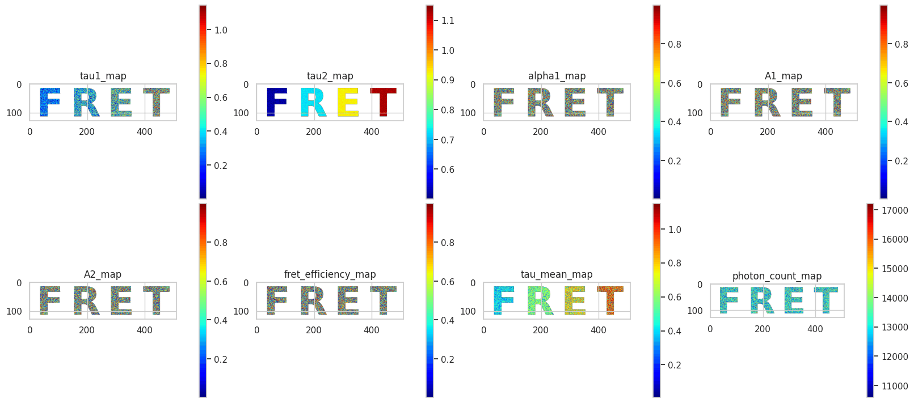
sim_decay_fret = gt_data_fret["raw_data"]["decay"]
sim_irf_fret = gt_data_fret["raw_data"]["irf"]
x_fret, y_fret = random_true_pixel(b_bool_mask_fret)
TRs_fret = gt_data_fret["results"]["TR_maps"]
maps_fret = gt_data_fret["results"]["maps"]
print(f"the non-zero pixel selected for probing is ({x_fret}, {y_fret})")
irf_norm_fret = Normalization(sim_irf_fret).norm_scale(sim_decay_fret)
DataViewer().plot_fli_px(
data_list=[sim_decay_fret, irf_norm_fret, TRs_fret["fit_map"], TRs_fret["residual_map"]],
pixel=(x_fret, y_fret),
mode=[0, 1, 2],
mode2=[1],
names=["decay", "irf", "fit"],
cmap=jet_m_fret,
)
_ = MessageDisplay().get_pixel_summary(data_maps=maps_fret, px=(x_fret, y_fret))
the non-zero pixel selected for probing is (23, 439)
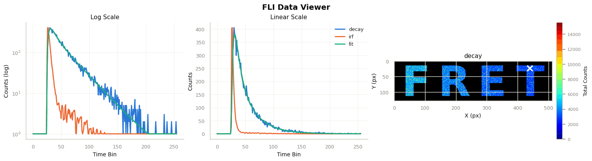
INFO:pyfli:
Pixel (23, 439)
─────────────────────
A 11268.5508
α 0.1553
τ₁ 0.3614
τ₂ 1.1407
R² —
Red.χ² —
Raw.χ² —
v-shift 0.0000
h-shift —
─────────────────────
1.3.1. Factor Analysis (bi-exponential FRET example, more parameter maps)#
fa_fret = FactorAnalysis(
decay=sim_decay_fret,
irf=sim_irf_fret,
mask=b_bool_mask_fret,
all_datasets=[maps_fret],
all_fitset=[TRs_fret],
method_names=["ground_truth"],
cluster_mask=img_cluster_fret,
cluster_names={1: "F", 2: "R", 3: "E", 4: "T"},
)
target_keys_fret = [
"tau1_map",
"tau2_map",
"alpha1_map",
"A1_map",
"A2_map",
"fret_efficiency_map",
"tau_mean_map",
"photon_count_map",
]
Per-pixel photon count vs. every bi-exponential parameter map, unbinned.
df_fret, edges_fret, fig, axes = fa_fret.analyze_and_plot(
factor_key="total_photons",
target_keys=target_keys_fret,
kind="scatter",
ncols=4,
)
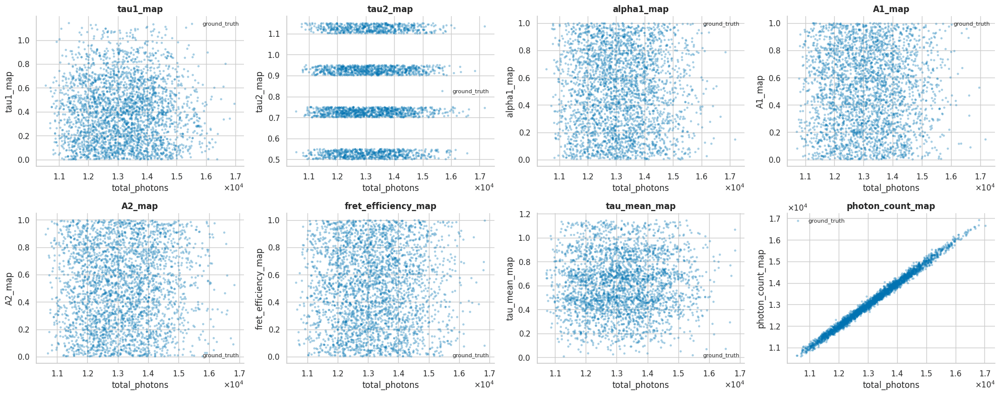
Same pixels grouped into 100 equal-frequency photon-count bins – mean per bin, with SEM error bands.
df_fret_binned, edges_fret_binned, fig, axes = fa_fret.analyze_and_plot(
factor_key="total_photons",
target_keys=target_keys_fret,
n_bins=100,
bin_mode="quantile",
kind="line",
stat="mean",
error="sem",
ncols=4,
)
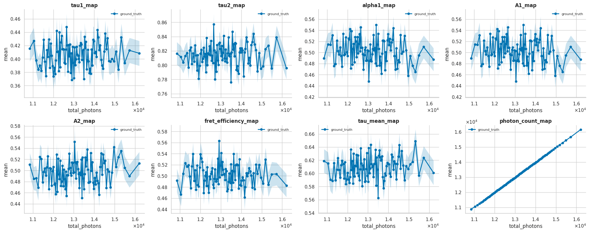
Coefficient of variation, $\sigma_\tau/\tau$, for tau1, tau2, and tau_mean vs. photon count.
df_fret_cv, edges_fret_cv, fig, axes = fa_fret.analyze_and_plot(
factor_key="total_photons",
target_keys=["tau1_map", "tau2_map", "tau_mean_map"],
n_bins=100,
bin_mode="quantile",
kind="line",
stat="cv",
error=None,
)
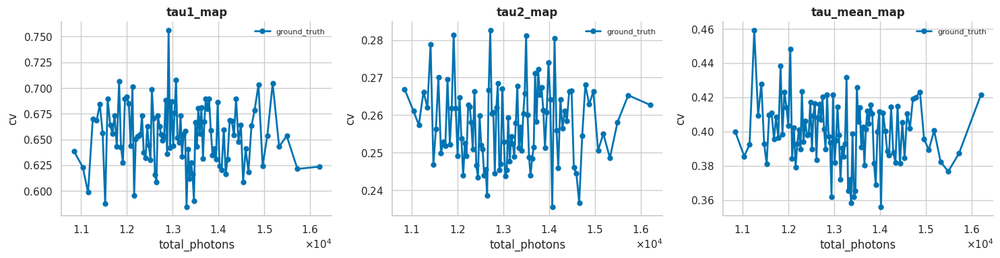
Cluster-specific view: same parameter maps, broken out per letter (F/R/E/T) instead of pooled.
df_fret_cluster, edges_fret_cluster = fa_fret.analyze_by_cluster(
factor_key="total_photons",
target_keys=target_keys_fret,
n_bins=20,
)
fig, axes = fa_fret.plot_by_cluster(df_fret_cluster, ncols=4)
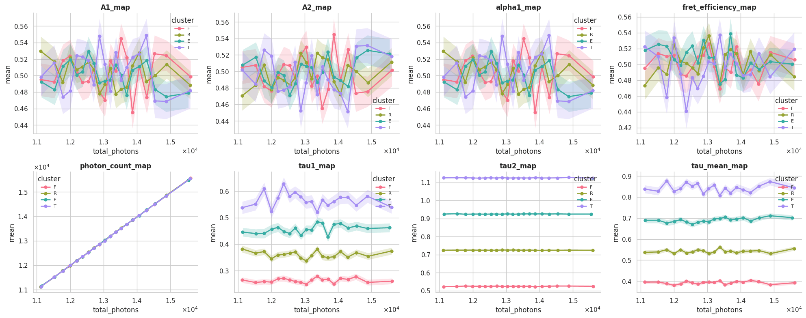
Cluster-specific coefficient of variation: $\sigma_\tau/\tau$ per letter (F/R/E/T), reusing df_fret_cluster computed above.
fig, axes = fa_fret.plot_by_cluster(df_fret_cluster, stat="cv", error=None)
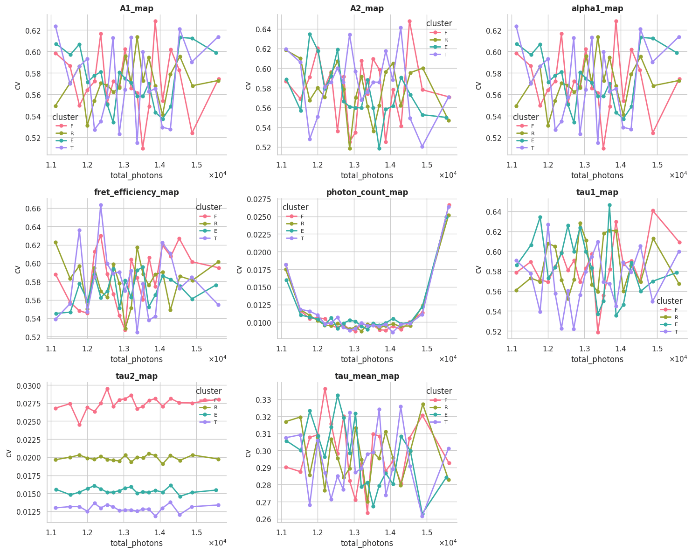
1.4. Bi-exponential FLIM Example#
Same letters (“F”, “L”, “I”, “M”) and the same masks/intensity image as the very first example, but this time with MODEL_TYPE = "bi-exponential". Since img_intensity, img_cluster, and b_bool_mask only depend on the letter shapes (not the decay model), they’re reused as-is – only the ROI photon-physics configs and the simulated decay change.
MODEL_TYPE_flim_bi = "bi-exponential"
mono_fraction_flim_bi = 0.0
BASE_CONFIG_flim_bi = {
# Modular Noise
"jitter": False,
"dcr_on": True,
"poisson": False,
"qe_on": True,
"read_noise_on": False,
# Sensor
"sensor_type": "discrete",
"bit": 12,
"dcr": 0.08,
"laser_feq": freq[1],
"round_on": True,
"clip_on": True,
# Fluorescence Physics (FLI / FRET)
"tau2": (1, 1),
"tau2_dist": "beta",
"efficiency": (1, 1),
"A1_fraction": (1, 1),
"photo_count": (2, 5),
"mono_fraction": mono_fraction_flim_bi,
"n_cycles": (1_500_000, 2_000_000),
}
def get_config_flim_bi(**kwargs):
"""Create a config by overriding defaults with specific test parameters."""
config = BASE_CONFIG_flim_bi.copy()
config.update(kwargs)
return config
ROI0_flim_bi = {}
ROI1_flim_bi = get_config_flim_bi(
tau2_beta_range=(0.05, 0.5),
)
ROI2_flim_bi = get_config_flim_bi(
tau2_beta_range=(0.05, 0.7),
)
ROI3_flim_bi = get_config_flim_bi(
tau2_beta_range=(0.05, 0.9),
)
ROI4_flim_bi = get_config_flim_bi(
tau2_beta_range=(0.05, 1.1),
)
simulated_img_flim_bi = FLIModelImageGenerator(
irf_data=irf_data[120, 40, :],
intensity_image=img_intensity,
roi_mask=img_cluster,
roi_params=[ROI0_flim_bi, ROI1_flim_bi, ROI2_flim_bi, ROI3_flim_bi, ROI4_flim_bi],
method="PHOTON_COUNTER",
verbose=True,
bool_mask=b_bool_mask,
)
gt_data_flim_bi = simulated_img_flim_bi.generate_image()
INFO:pyfli:Generating PHOTON_COUNTER FLI Image [128x512x256]...
res_flim_bi = gt_data_flim_bi["results"]["maps"]
data_list_flim_bi = [
res_flim_bi["tau1_map"],
res_flim_bi["tau2_map"],
res_flim_bi["alpha1_map"],
res_flim_bi["A1_map"],
res_flim_bi["A2_map"],
res_flim_bi["fret_efficiency_map"],
res_flim_bi["tau_mean_map"],
res_flim_bi["photon_count_map"],
]
data_names_flim_bi = [
"tau1_map",
"tau2_map",
"alpha1_map",
"A1_map",
"A2_map",
"fret_efficiency_map",
"tau_mean_map",
"photon_count_map",
]
jet_m_flim_bi = ColorProcessor().lowest_zero("jet")
cmaps_flim_bi = [jet_m_flim_bi] * len(data_list_flim_bi)
_ = DataViewer().display_data(
data_list_flim_bi,
structure=(2, 4),
coord=None,
data_names=data_names_flim_bi,
cmaps=cmaps_flim_bi,
v_ranges=None,
figsize=(16, 7),
normalize=False,
yscale="linear",
)
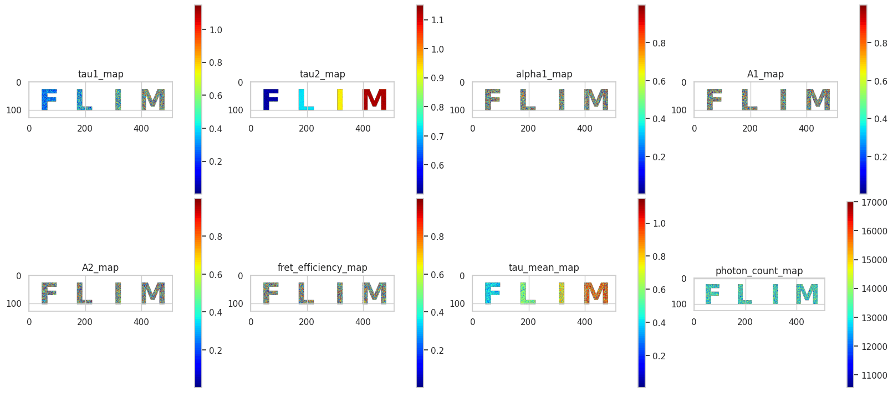
sim_decay_flim_bi = gt_data_flim_bi["raw_data"]["decay"]
sim_irf_flim_bi = gt_data_flim_bi["raw_data"]["irf"]
x_flim_bi, y_flim_bi = random_true_pixel(b_bool_mask)
TRs_flim_bi = gt_data_flim_bi["results"]["TR_maps"]
maps_flim_bi = gt_data_flim_bi["results"]["maps"]
print(f"the non-zero pixel selected for probing is ({x_flim_bi}, {y_flim_bi})")
irf_norm_flim_bi = Normalization(sim_irf_flim_bi).norm_scale(sim_decay_flim_bi)
DataViewer().plot_fli_px(
data_list=[sim_decay_flim_bi, irf_norm_flim_bi, TRs_flim_bi["fit_map"], TRs_flim_bi["residual_map"]],
pixel=(x_flim_bi, y_flim_bi),
mode=[0, 1, 2],
mode2=[1],
names=["decay", "irf", "fit"],
cmap=jet_m_flim_bi,
)
_ = MessageDisplay().get_pixel_summary(data_maps=maps_flim_bi, px=(x_flim_bi, y_flim_bi))
the non-zero pixel selected for probing is (92, 216)
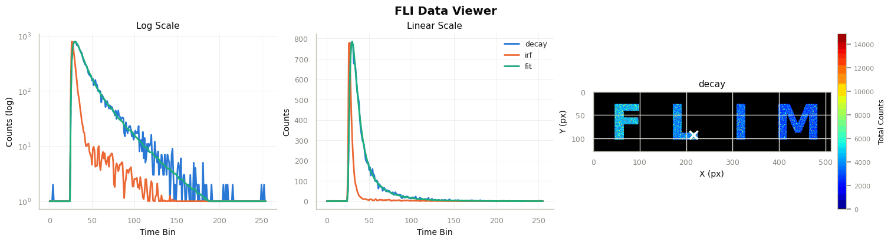
INFO:pyfli:
Pixel (92, 216)
─────────────────────
A 14563.5049
α 0.3559
τ₁ 0.2625
τ₂ 0.7167
R² —
Red.χ² —
Raw.χ² —
v-shift 0.0000
h-shift —
─────────────────────
1.4.1. Factor Analysis (bi-exponential FLIM example, more parameter maps)#
fa_flim_bi = FactorAnalysis(
decay=sim_decay_flim_bi,
irf=sim_irf_flim_bi,
mask=b_bool_mask,
all_datasets=[maps_flim_bi],
all_fitset=[TRs_flim_bi],
method_names=["ground_truth"],
cluster_mask=img_cluster,
cluster_names={1: "F", 2: "L", 3: "I", 4: "M"},
)
target_keys_flim_bi = target_keys_fret
df_flim_bi, edges_flim_bi, fig, axes = fa_flim_bi.analyze_and_plot(
factor_key="total_photons",
target_keys=target_keys_flim_bi,
kind="scatter",
ncols=4,
)
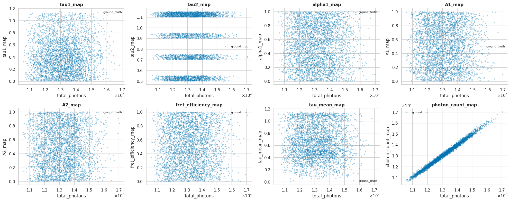
df_flim_bi_binned, edges_flim_bi_binned, fig, axes = fa_flim_bi.analyze_and_plot(
factor_key="total_photons",
target_keys=target_keys_flim_bi,
n_bins=100,
bin_mode="quantile",
kind="line",
stat="mean",
error="sem",
ncols=4,
)
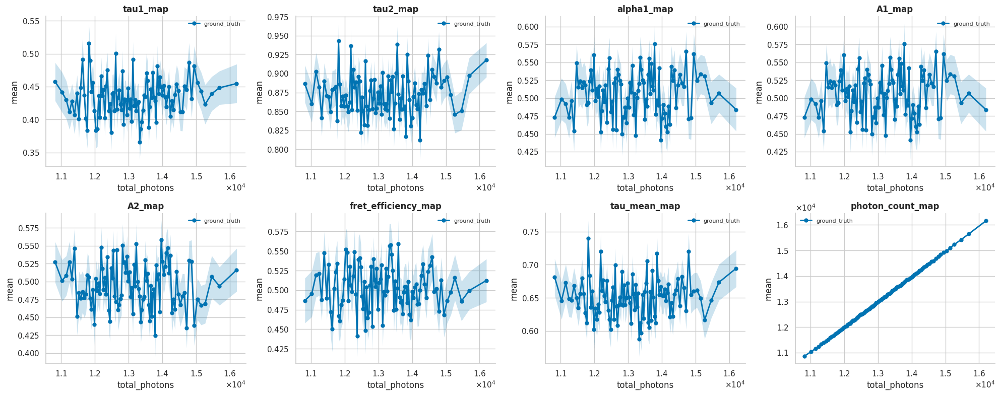
Coefficient of variation, $\sigma_\tau/\tau$, for tau1, tau2, and tau_mean vs. photon count.
df_flim_bi_cv, edges_flim_bi_cv, fig, axes = fa_flim_bi.analyze_and_plot(
factor_key="total_photons",
target_keys=["tau1_map", "tau2_map", "tau_mean_map"],
n_bins=100,
bin_mode="quantile",
kind="line",
stat="cv",
error=None,
)
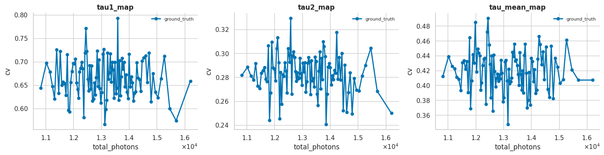
df_flim_bi_cluster, edges_flim_bi_cluster = fa_flim_bi.analyze_by_cluster(
factor_key="total_photons",
target_keys=target_keys_flim_bi,
n_bins=20,
)
fig, axes = fa_flim_bi.plot_by_cluster(df_flim_bi_cluster, ncols=4)
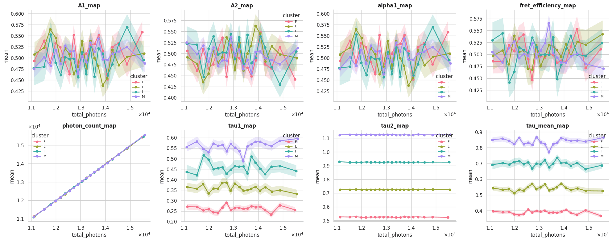
Cluster-specific coefficient of variation: $\sigma_\tau/\tau$ per letter (F/L/I/M), reusing df_flim_bi_cluster computed above.
fig, axes = fa_flim_bi.plot_by_cluster(df_flim_bi_cluster, stat="cv", error=None)
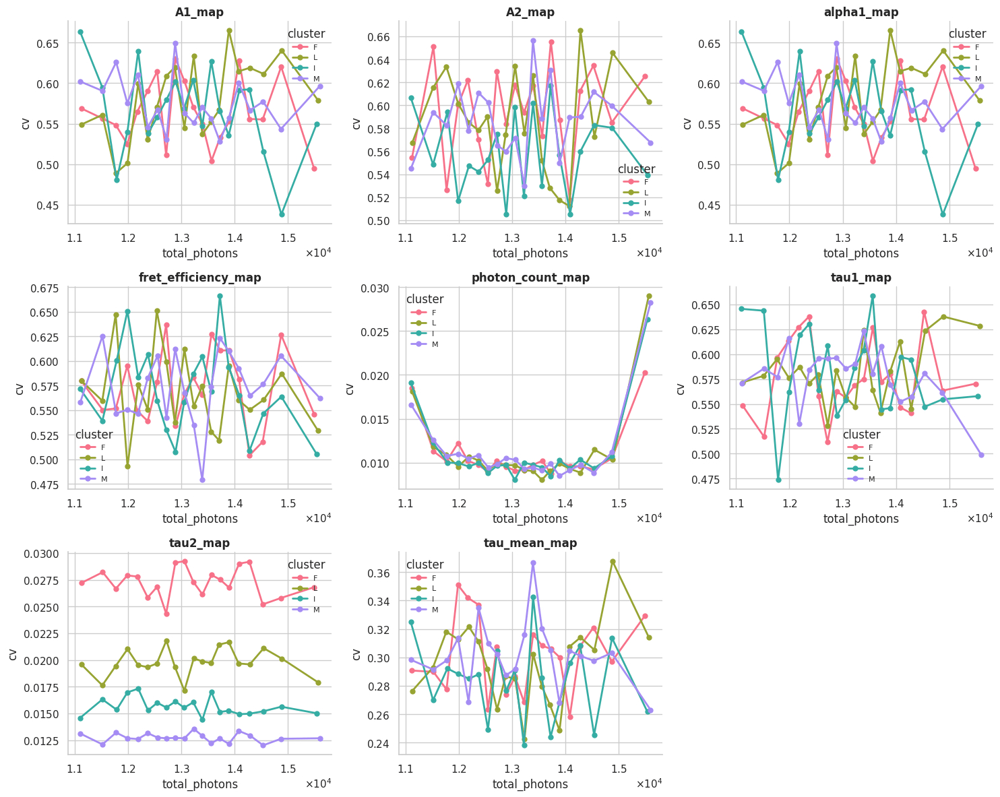
1.4.2. Standalone CVPlot: multi-cluster mask (bi-exponential FLIM case, per letter)#
Same lightweight pyfli.data_vnp.CVPlot class used for the mono FLIM case earlier in this notebook, now applied to maps_flim_bi/sim_decay_flim_bi with img_cluster (F/L/I/M) as cluster_mask – one subplot per parameter (tau1, tau2, tau_mean), one line per letter.
df_cvplot_cluster, fig, axes = cv_plot.compute_and_plot(
maps_flim_bi,
tau_keys=["tau1_map", "tau2_map", "tau_mean_map"],
photon_map=sim_decay_flim_bi.sum(axis=-1),
mask=b_bool_mask,
cluster_mask=img_cluster,
cluster_names={1: "F", 2: "L", 3: "I", 4: "M"},
n_bins=20,
show_ideal_trend=True,
show_powerlaw_fit=True,
)
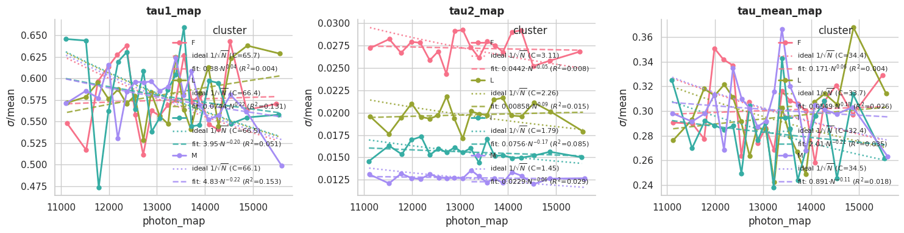
1.5. Comparing FLIM vs FRET (bi-exponential)#
Both simulations share the same parameter map names (bi-exponential model), but come from independent decay cubes with different masks – so FactorAnalysis.compare() is used instead of plot()/plot_by_cluster(), which assume one shared decay across series. Each dataset’s line is drawn at its own actual total_photons bin means.
fig, axes = FactorAnalysis.compare(
[("FLIM", df_flim_bi_binned), ("FRET", df_fret_binned)],
target_keys=target_keys_fret,
ncols=4,
)
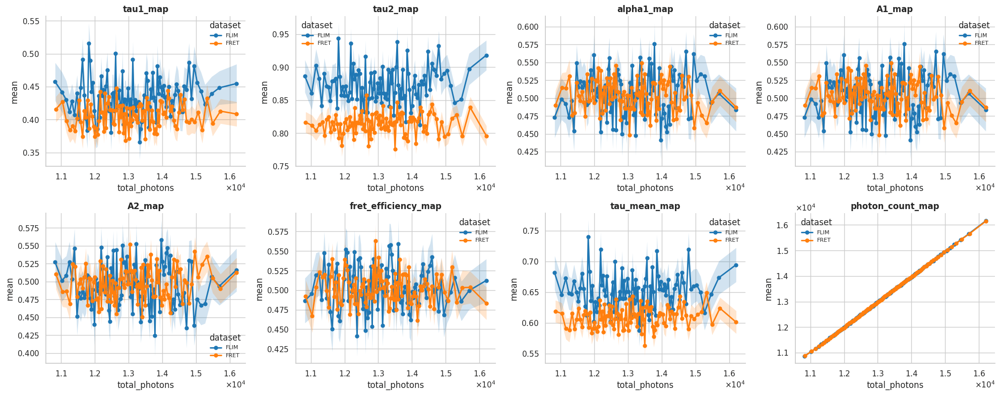